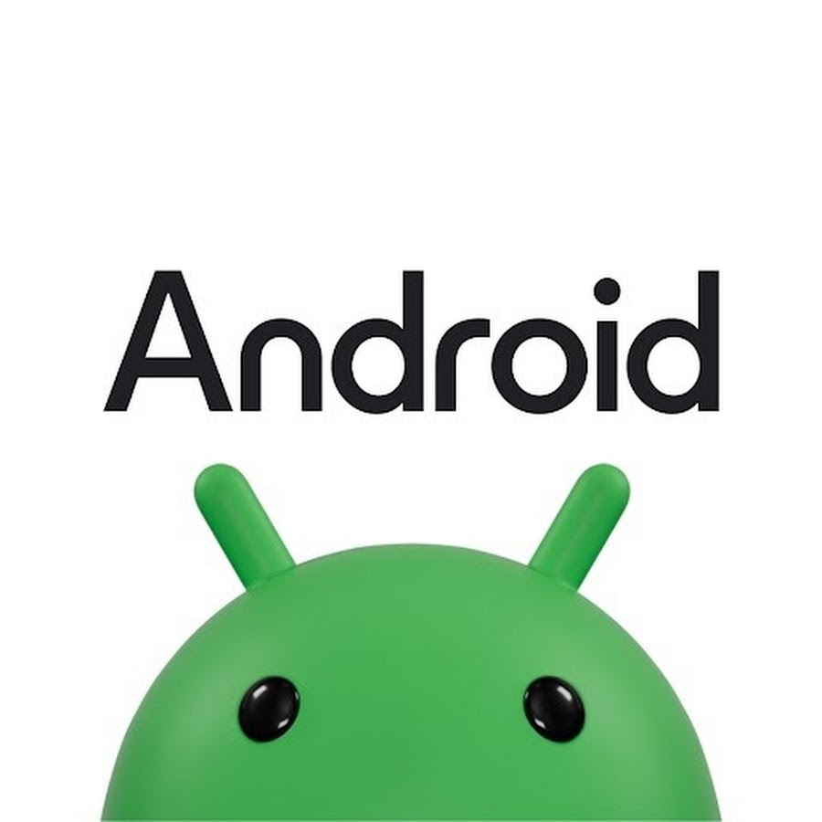
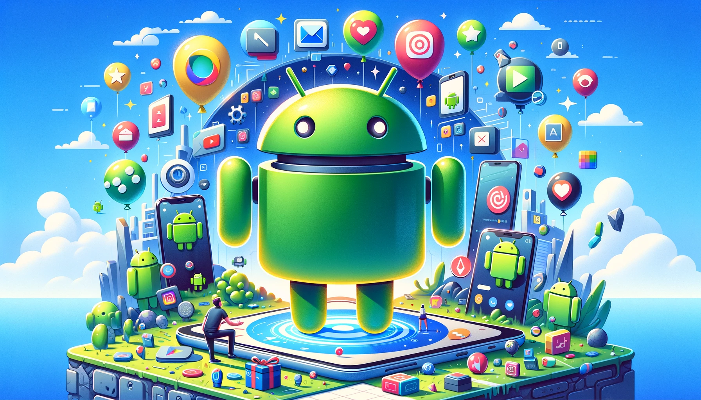

Sistema operacional Android:
Criado em 2007 o
sistema operacional Android é o mais usado no mundo,
projetado pela google este sistema está presente em vários aparelhos de diferentes fabricantes como Samsung, Motorola, LG, e Sony, e no Linux. Inicialmente em 2003. Andy
Rubin, seu criador, começou desenvolvendo o sistema operacional para câmeras digitais. Porém, ele percebeu que o
mercado para câmeras não era assim tão grande e focou o sistema para os smartphones.
Evolução: O Android passou por diversas transformações ao longo do tempo, em busca de uma melhor utilização do
celular pelo usuário. Entre elas, é possível mencionar novidades relevantes em segurança e privacidade, alterações
no layout e design, recursos adicionais ao usuário e variações no modo de navegação, entre outras. Até hoje existem 24
versões dele. Dando destaque ao O Google Nexus, nasceu em 2010 e foi um telefone Android feito por meio de
colaboração entre o Google e diferentes fabricantes que foram escolhidos a cada versão do Nexus. O programa Nexus
foi a forma que o Google encontrou de oferecer aos usuários a verdadeira experiência do Android puro, sem
personalizações e todo as mudanças que fabricantes e operadoras de telefonia colocam no sistema operacional. E
depois foi criado o google pixel que serviu como um sucessor ao nexus.